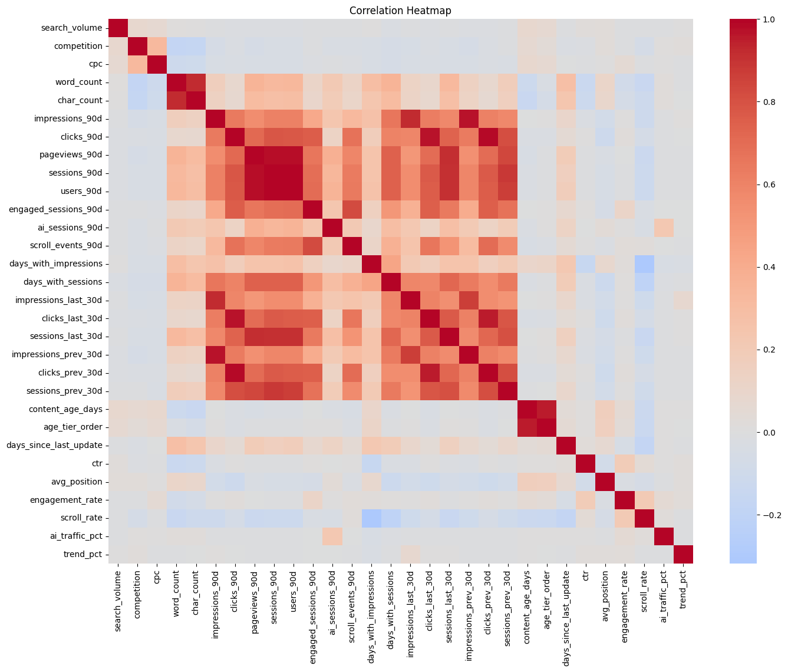
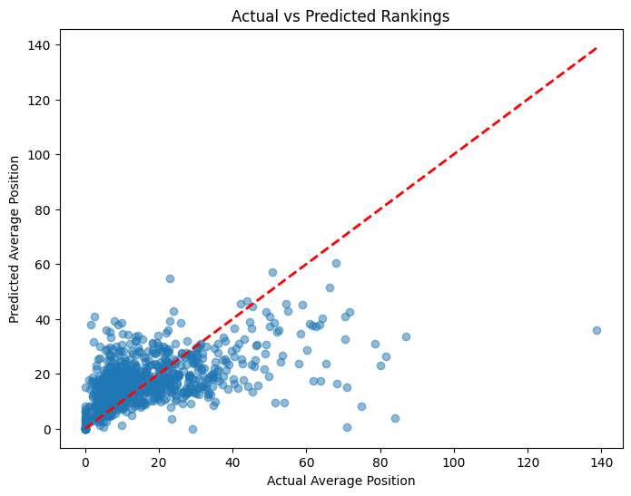
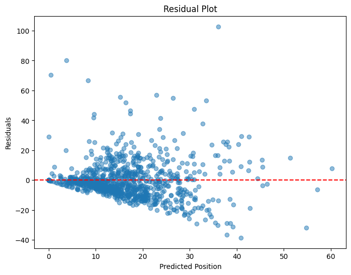
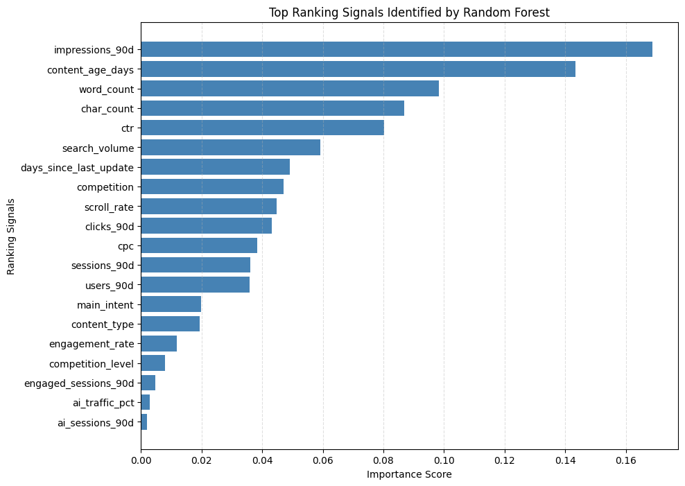

Ranking Signal Analysis Using Random Forest on FlyRank Search Intelligence Data
Which content and search intelligence signals have the greatest influence on search ranking performance?
This research trains a Random Forest Regressor on FlyRank Search Intelligence data to predict average search position and to determine which content, traffic, and engagement features contribute most to search visibility — producing practical recommendations for SEO strategy and content prioritization.
Abstract
Search ranking is shaped by a wide mix of content, engagement, and demand signals, and understanding which of these signals matter most is central to effective SEO decision-making. This study applies a Random Forest Regressor to the anonymized FlyRank Search Intelligence dataset — 4,660 records across 44 attributes describing content quality, search demand, competition, traffic, and user engagement — to predict a page's average search position and rank the features driving that prediction.
After removing missing target values and duplicate records, encoding categorical fields, and selecting 20 candidate features, the data was split 80:20 into training and testing sets (3,728 and 932 records respectively). A Random Forest Regressor with 200 estimators was trained and evaluated using Mean Absolute Error, Root Mean Squared Error, and R², achieving an MAE of 8.487, an RMSE of 12.738, and an R² of 0.286. Feature importance analysis identified 90-day impressions, content age, word count, character count, and click-through rate as the strongest ranking signals in the dataset. While predictive accuracy is moderate, the model surfaces interpretable, actionable signals that can guide content refresh and optimization priorities.
Introduction
Search ranking determines whether content is discovered at all. A page's average position in search results governs the share of impressions that convert into clicks, sessions, and downstream engagement, which makes ranking one of the highest-leverage variables in any content or SEO strategy. But ranking is rarely driven by a single factor — it emerges from the interaction of content depth, freshness, competitive pressure, search demand, and how users actually engage once they arrive.
Because that relationship between inputs and ranking outcome is non-linear and involves many interacting variables, machine learning is well suited to modeling it. Rather than assuming a fixed weighting between signals, a learned model can uncover which combinations of content and engagement metrics are most predictive of position, and quantify their relative contribution.
A Random Forest Regressor was selected for this task specifically because it captures nonlinear relationships between ranking signals and, unlike many black-box alternatives, provides feature importance scores — giving the analysis both predictive capability and interpretability. That interpretability is what turns a statistical model into a set of concrete, defensible recommendations for an SEO or content team.
Dataset
The study uses the anonymized FlyRank Search Intelligence dataset, which brings together content quality metrics, search demand, engagement statistics, traffic indicators, and SEO-related variables collected over a 90-day observation window. After loading, the working dataset comprised 4,660 records across 44 attributes, with zero duplicate rows.
| Property | Value |
|---|---|
| Source | FlyRank Search Intelligence (anonymized), 90-day window |
| Records | 4,660 |
| Attributes | 44 |
| Selected model features | 20 |
| Target variable | avg_position — average search position |
| Duplicate rows | 0 |
Selected Features
Twenty features were carried forward into modeling, spanning search demand, competition, content characteristics, traffic, and engagement:
| Category | Features |
|---|---|
| Search demand & competition | search_volume, competition, competition_level, cpc |
| Content characteristics | content_type, main_intent, word_count, char_count, content_age_days, days_since_last_update |
| Traffic (90-day) | impressions_90d, clicks_90d, sessions_90d, users_90d, ai_sessions_90d |
| Engagement | ctr, engagement_rate, scroll_rate, engaged_sessions_90d, ai_traffic_pct |
Several attributes contained missing values prior to cleaning — most notably provider_used
(3,304 missing), word_count and char_count (1,222 each), and model_used
(895) — which informed the cleaning steps described in Methodology.
Methodology
A nine-stage pipeline carries the raw dataset through to actionable recommendations.
Dataset
Load the anonymized FlyRank Search Intelligence CSV — 4,660 rows × 44 columns.
Cleaning
Remove missing target values and duplicate rows; encode categorical fields with Label Encoding.
Exploratory Data Analysis
Summary statistics, missing-value analysis, correlation analysis, and distribution checks.
Feature Engineering
Select 20 relevant ranking signals; transform categorical variables into numeric form.
Train / Test Split
80:20 split — 3,728 training records, 932 testing records (random_state = 42).
Random Forest Regressor
200 estimators, trained to predict avg_position from the 20 selected features.
Evaluation
Score predictions on the held-out test set using MAE, RMSE, and R².
Feature Importance
Extract and rank Gini-based importance scores for every model feature.
Recommendations
Translate the strongest signals into concrete, prioritized content actions.
Exploratory Data Analysis
Before modeling, the dataset was examined through summary statistics, missing-value analysis, correlation analysis, and distribution checks across the target variable, content type, and competition level.

sns.histplot for avg_position and sns.countplot for
content_type and competition_level — profiling the shape of the ranking
target and the categorical balance of content type and competition level ahead of feature engineering.
Model Development
| Stage | Configuration |
|---|---|
| Train / test split | 80% train / 20% test — 3,728 training rows, 932 testing rows (random_state=42) |
| Feature encoding | Label Encoding applied to competition_level, content_type, and main_intent |
| Algorithm | RandomForestRegressor (scikit-learn) |
| Hyperparameters | n_estimators=200, random_state=42, n_jobs=-1 |
| Target | avg_position |
A Random Forest Regressor was chosen for its ability to model nonlinear interactions between ranking signals without requiring manual feature transformation, and because it natively exposes feature importance scores once trained. The model was fit on the training split and used to generate predictions on the held-out test set, which were then compared against actual average position values.
Results
The trained Random Forest Regressor was evaluated on the 932-record test set using three standard regression metrics.
Average absolute deviation between predicted and actual position.
Root mean squared error, penalizing larger prediction misses more heavily.
Share of variance in average position explained by the model.


Feature importance analysis revealed that impressions over the last 90 days, content age, word count, character count, and click-through rate were the strongest ranking signals in the dataset.
Feature Importance
Random Forest exposes a feature importance score for every input, estimating each signal's contribution to predicting average search position. Higher scores indicate stronger influence on the outcome.

Top 10 Ranking Signals
| Rank | Feature | Importance | Relative |
|---|---|---|---|
| 1 | impressions_90d | 0.1689 | |
| 2 | content_age_days | 0.1435 | |
| 3 | word_count | 0.0982 | |
| 4 | char_count | 0.0869 | |
| 5 | ctr | 0.0801 | |
| 6 | search_volume | 0.0592 | |
| 7 | days_since_last_update | 0.0492 | |
| 8 | competition | 0.0472 | |
| 9 | scroll_rate | 0.0448 | |
| 10 | clicks_90d | 0.0432 |
What the top signals mean
- Impressions (90d) — the clearest signal in the model; pages already earning search visibility tend to keep or improve position.
- Content age — older content shows a strong relationship to ranking, reinforcing the value of a refresh cadence.
- Word count & character count — content depth and length remain meaningfully predictive of ranking outcomes.
- Click-through rate — how compelling a result is once shown, independent of raw visibility.
- Search volume, recency of updates, and competition — secondary but non-trivial contributors describing demand and competitive context.
Discussion
The analysis indicates that search visibility is influenced by multiple factors rather than a single metric. Content freshness, search impressions, content depth, and user engagement collectively contribute to ranking performance, rather than any one variable dominating the outcome.
Although the predictive performance is moderate — an R² of 0.286 leaves a substantial share of variance unexplained — the model successfully identifies meaningful ranking signals that can guide SEO decision-making. The value of this analysis lies less in precise position forecasting and more in surfacing which levers are worth pulling first.
Recommendations
Based on the findings, five actions are proposed for content and SEO teams.
Refresh older content regularly
Content age was the second-strongest predictor of ranking — a routine refresh cadence directly targets this signal.
Expand low word-count articles
Word count and character count both rank in the top four signals, suggesting shallow pages carry a measurable disadvantage.
Fix high-impression, low-click pages
Pages that already earn impressions but not clicks represent the fastest path to improved CTR — and CTR is a top-five signal.
Improve titles & meta descriptions
Sharper on-SERP copy is the most direct lever for lifting CTR without changing underlying content.
Prioritize high-potential pages first
Optimize existing content with strong impressions or search volume before investing in net-new pages.
Limitations
Historical, anonymized scope. This research is based on historical anonymized FlyRank data. Several external ranking factors, such as backlinks, technical SEO, and algorithm updates, were not included.
Association, not causation. The results should be interpreted as identifying associations rather than establishing direct causal relationships.
Conclusion
This study applied a Random Forest Regressor to identify important ranking signals using FlyRank Search Intelligence data. The results demonstrate that impressions, content freshness, content length, and engagement metrics have the greatest influence on search ranking performance.
The proposed methodology provides an interpretable and reproducible framework for identifying optimization opportunities and supporting data-driven SEO strategies.
References
- FlyRank Machine Learning Internship Dataset (anonymized Search Intelligence data).
- Scikit-learn Documentation — scikit-learn.org
- Pandas Documentation — pandas.pydata.org
- NumPy Documentation — numpy.org
- Matplotlib Documentation — matplotlib.org